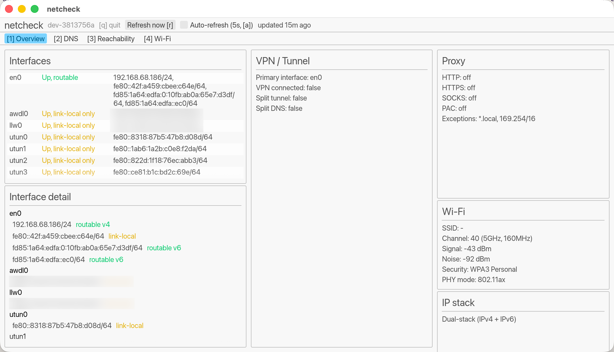
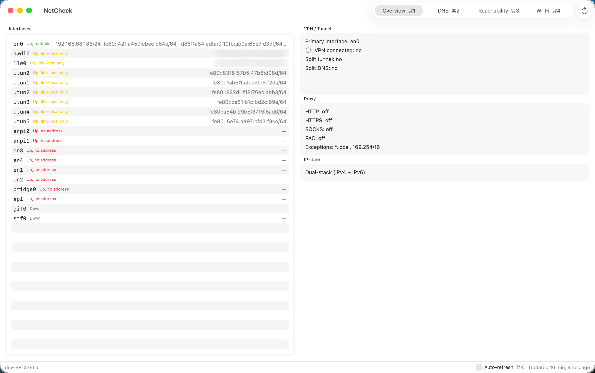

netcheck
A holistic view of network status on macOS: interfaces, VPN/tunnel state, DNS resolvers (including split-tunnel/split-DNS), and reachability — the things you end up checking manually when the Cisco VPN acts up.

netcheck reports:
- Interfaces — name, up/down, loopback, addresses
- VPN / tunnel — which tunnel interfaces have a real address, what your actual default route is, and whether that combination looks like a split tunnel
- DNS — every resolver macOS knows about, including scoped (per-interface) resolvers — the mechanism Cisco AnyConnect and similar clients use for split-DNS — and whether a scoped resolver is bound to a VPN tunnel
- Reachability — concurrent pings to well-known public DNS servers, and concurrent HTTPS connects to well-known domains (not ping, since some operators filter ICMP at the edge regardless of whether the service is up)
- DNS resolution — resolves well-known domains and reports success, addresses, and lookup latency
Install
Three ways to get netcheck, in order of ease.
Homebrew (recommended)
brew tap hugoh/tap
brew install netcheck # CLI + TUI + GUI
brew install --cask netcheck # native SwiftUI app
You can install either or both — they're independent.
Direct download
Grab the latest release from the Releases page:
netcheck-<version>-aarch64-apple-darwin.tar.gz— thenetcheck,netcheck-tui, andnetcheck-guibinaries. Unpack and put them on yourPATH.NetCheck-<version>.zip— the native app. Unzip and dragNetCheck.appto/Applications.
Both are Apple Silicon (arm64) only.
Note: NetCheck.app is ad-hoc signed, not notarized with a Developer ID. The Homebrew cask strips the quarantine attribute on install, so it opens normally. With a direct download, macOS will flag it as from an unidentified developer on first launch — right-click (or Control-click) the app and choose Open, or clear it manually: xattr -cr /Applications/NetCheck.app.
From source
mise run build:cli # netcheck-cli
mise run build:tui # netcheck-tui
mise run build:gui # netcheck-gui
mise run build:app # dev build of the native NetCheck.app
mise run bundle:swiftui # signed release .app bundle of NetCheck
The four flavors
netcheck ships as four separate front ends, all built on the same diagnostics core, so pick whichever fits how you want to check your network.
| What it is | Run it | |
|---|---|---|
CLI (netcheck) |
Scriptable, JSON output, one-shot checks | netcheck status |
TUI (netcheck-tui) |
Live-refreshing terminal dashboard | netcheck-tui |
GUI (netcheck-gui) |
Plain cross-platform-style window (egui) — same panels as the TUI, but a resizable window with tabs | netcheck-gui |
| NetCheck.app | A real native macOS app (SwiftUI/AppKit) — Dark Mode, vibrancy, proper window chrome | open from Applications, or open /Applications/NetCheck.app |
netcheck-gui can never look pixel-native on macOS — it draws every widget itself rather than using AppKit. NetCheck.app is the one that's meant to feel like a Mac app; the GUI is there for the cases (remote/X11, or just preference) where a plain window beats either a terminal or a native app.
Screenshots
CLI — netcheck vpn
{
"tunnels": [],
"primary_interface": "en0",
"connected": false,
"split_tunnel": false,
"routed_subnets": []
}
TUI — netcheck-tui
Overview DNS Reachability Wi-Fi
┌Interfaces────────────────────────────┐┌VPN / Tunnel────────────────┐┌Wi-Fi───────────────────────┐
│en0 UP, ROUTABLE 192.168.68.18││Primary: en0 ││SSID: - │
│awdl0 UP, LINK-LOCAL fe80::xxxx:xx││VPN connected: false ││Channel: 40 (5GHz, 160MHz) │
│llw0 UP, LINK-LOCAL fe80::xxxx:xx││Split tunnel: false ││Signal: -44 dBm │
│utun0 UP, LINK-LOCAL fe80::8318:87││Split DNS: false ││Noise: -92 dBm │
│utun1 UP, LINK-LOCAL fe80::1ab6:1a││ ││Security: WPA3 Personal │
│utun2 UP, LINK-LOCAL fe80::822d:1f││ ││PHY mode: 802.11ax │
└──────────────────────────────────────┘│ ││ │
┌Interface detail──────────────────────┐└────────────────────────────┘│ │
│en0 │┌Proxy───────────────────────┐│ │
│ 192.168.68.186/24 routable││HTTP: off ││ │
│ fe80::42f:a459:cbee:c64e/64 link-loc││HTTPS: off │└────────────────────────────┘
└──────────────────────────────────────┘└────────────────────────────┘└────────────────────────────┘
q: quit r: refresh now a: auto-refresh (off) 1-4: tabs updated 0s ago netcheck dev-396365d
GUI — netcheck-gui

NetCheck.app

Usage
netcheck status # full snapshot as JSON
netcheck interfaces
netcheck dns
netcheck vpn
netcheck ping 1.1.1.1 8.8.8.8
netcheck resolve google.com github.com
netcheck connect amazon.com microsoft.com --port 443
# live terminal dashboard: q quit, r refresh, a toggle auto-refresh
netcheck-tui
# native-style window: same q/r/a keys, [1]-[4] to switch tabs
netcheck-gui
The native app, the TUI, and the GUI all auto-refresh every 5 seconds (off by default in the GUI/native app — toggle with a); the CLI runs on demand and is meant for scripting/piping into jq.
NetCheck.app uses Cmd-modified shortcuts instead — q to quit, ⌘R to refresh, ⌘A to toggle auto-refresh, ⌘1-⌘4 to switch tabs — shown in its toolbar and footer, so typing in a field can't accidentally trigger them.